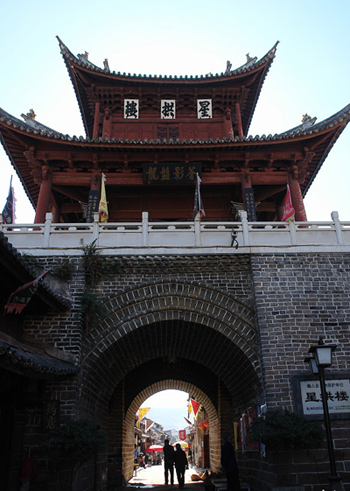

旅游景点
 悠久的历史，造就了巍山彝族回族自治县丰富多彩的历史文化，文物古迹荟萃，风景名胜众多。有巍宝山、巍山古城、玄龙寺、圆觉寺、山龙山于图城、云隐寺、陈异叔石棺、慧明寺、东山蒙化灵泉、鸟道雄关、五印山等等。
拱辰楼、星拱楼
巍山古城筑有城墙，东西南北四个城门，城中心建星拱楼，古城形方如印。城内为棋盘式街道格局。有25条街，18条巷，街道纵横交错。
巍山北城楼名拱辰楼，建于明洪武年间。在高大的城墙上，有五间重檐歇顶式的古老建筑。城楼南面挂“魁雄六诏”，北面挂“万里瞻天”横匾。气势雄威。古楼高23.5米，下舌城墙高8.3米。楼架由28棵大柱支撑，由东、西两道小门登级而上。登上楼顶，举目四望，东西南北四条街道向四方延伸，屋舍俨然。整个巍山坝子全收眼底，十分壮观。
巍然屹立的拱辰楼和星拱楼，成为古城的标志性建筑。古城内民居基本保留了明、清风貌的中式结构。有的是“三坊一照壁”，有的是“四合五天井”，古朴典雅。在古城内外，有众多明、清古建筑，如文庙、文华书院、玉皇阁、东岳宫等。一些专家学者考察巍山古城后赞叹不已，认为“巍山古城风貌如此完整，在云南乃至全国均属少见”。
巍宝山
巍宝山是全国14座道教名山之一。为云南省第一批国家级森林公园。森林覆盖率达85.2%。山体像一大青狮，正回头俯瞰古城和瓜江；山下水库和大坝好似其梳妆台，白云浮游的水面宛若其穿衣镜。山势起伏雄伟，苍松翠柏挺拔，曲径通幽，景色迷人。在全国14座道教名山中，巍宝山的道观殿宇最多、最宏伟、建筑风格最具地方民族特色。其中的长寿洞八卦建筑风格、大殿门上的八仙过海镂空浮雕、大殿顶部的八对藻井镂空龙图，在全国道教名山中绝无仅有。巍宝山上依山就势建有22座清代道观，规模宏大，建筑工艺精湛。山上、殿宇中保留着“松下踏歌”壁画等大批有价值的碑文、石刻、壁画、楹联、匾额、雕刻等。
巍宝山古建筑群、巍山古城拱辰楼、南诏山龙山于图城遗址，均为省级重点文物保护单位。
巍宝山是南诏发祥地，是南诏始祖细奴逻耕、牧、发迹之地。山前土主庙（又称“巡山殿”）相传为其家庙。南诏土主庙是国内最早、规模最大的土主庙，是彝族土主崇拜的中心和源流。每年农历正月十五、十六两天，彝族群众均到土主庙杀猪宰羊，祭祀开国先祖细奴逻。据《蒙化县志》记载，蒙舍诏，俗名土主庙，蒙化十三代为郡中十三土主。又据《南诏野史》载：“开元二年，唐授逻皮为特进，封台登郡王……开元二年，立土主庙”。大殿上塑有身着彝服的细奴逻及二侍者的像。每年9月14日，是南诏始祖细奴逻生日，届时新村男子要来巡山殿祭祀。土主庙附近，方圆数十里内道教系统的名胜古迹，星罗棋布。
巍宝山是集自然风光、南诏根源文化和道教文化为一体的名山。
圆觉寺
圆觉寺林木掩映，风景秀丽，是游览胜地，已有五百多年历史。明代学者杨慎曾寓居于此，在大殿上题了两副对联，一副是：“一水抱孤城，烟霭有无，拄杖僧归苍茫外；群峰朝殿阁，雨晴浓淡，倚栏人在画图中”。一副是：“高阁高悬，低阁低悬，僧在画中看画；远峰远刊，近峰近刊，人来山上观山”。圆觉寺前的参天古柏林中，有双塔耸立，高约15米，有九层，上有宝顶，是方形密檐式砖塔。圆觉寺背山面城，从山门拾级而上，一进三院，步步登高，有四大天王殿、大雄宝殿、后殿。大雄宝殿两侧建有侧殿。整个寺建筑结构严谨，安排得体。这里林深树密，流水潺潺，环境幽静，游人不绝。
巍山县城北约20公里的山龙山于图城山上，有一面积约三百多平方米的缓坡，传说是南诏国的第一代都城――山龙山于图城。山龙山于图山旁，有一名叫“火烧松明楼”的地方，是传说中的南诏王“火烧松明楼”的遗址。蒙舍诏主皮逻阁，逐渐强盛，想吞并五诏，于唐开无26年（公元738年）6月24日，用松树明子建一幢楼，叫“松明楼”，邀请五诏主来祭祖。��赕诏主皮逻登妻白洁夫人，感到南诏王居心叵测，打一只铁镯戴在丈夫手臂上，正当五诏主在松明楼作乐时，皮逻阁放火烧松明楼，五诏主均被烧死。五诏妻子无法辨认烧焦的尸体。只有白洁夫人认出丈夫手臂上有铁镯。后，白洁夫人起兵抵抗，以身殉情。后人为纪念白洁夫人，每到6月25日，就在各村点起火把，各家扎小火把，村里村外遍地火把。据说，这就是彝族“火把节”的由来。
古城东，有一奇特的石棺，建于清初。据云是明将陈异叔之墓。石棺长13米，宽10米，前高2米，后高3米。石棺前立大理石墓碑，碑前有一长石桌，碑后10米年有石亭一座。石棺两侧各立石方桌一张，距离方桌左右各30米处，各立5米高的石烛一根。这奇特的石棺，为陈异叔晚年所凿，并在石棺上镌诗明志。石棺建成，陈异叔即邀亲友前来观看，于是陈含笑入棺，长眠在此。陈是明末一位武将，明亡避居山中。